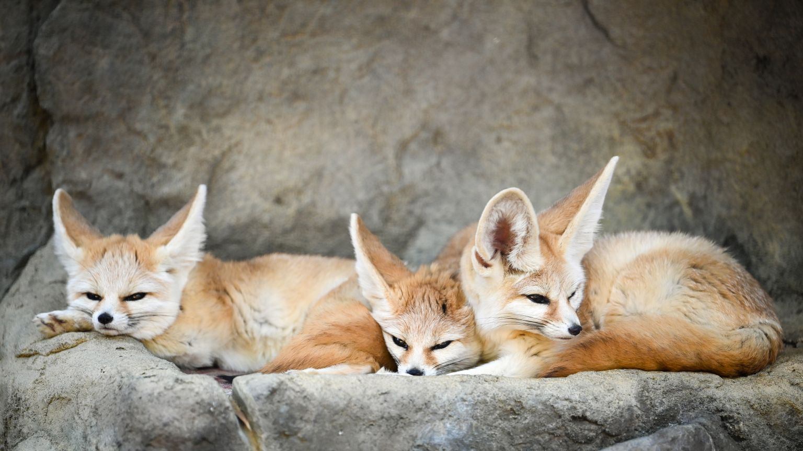
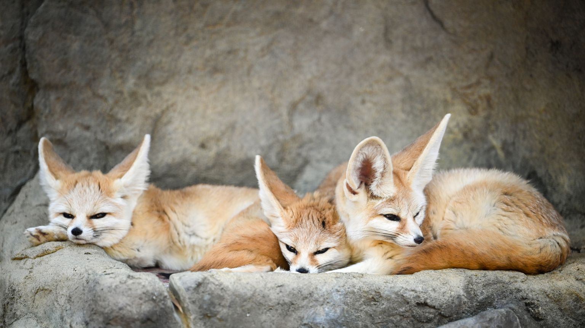

The fennec fox (Vulpes zerda) is a small crepuscular fox native to the deserts of North Africa, ranging from Western Sahara and Morocco to the Sinai Peninsula. Its most distinctive feature is its unusually large ears, which serve to dissipate heat and listen for underground prey. The fennec is the smallest fox species. Its coat, ears, and kidney functions have adapted to the desert environment with high temperatures and little water. It mainly eats insects, small mammals and birds. The fennec has a life span of up to 14 years in captivity and about 10 years in the wild. Its main predators are the Verreaux's eagle-owl, jackals and other large mammals. Fennec families dig out burrows in the sand for habitation and protection, which can be as large as 120 m2 and adjoin the burrows of other families. Precise population figures are not known but are estimated from the frequency of sightings; these indicate that the fennec is currently not threatened by extinction. Knowledge of social interactions is limited to information gathered from captive animals. The fennec's fur is prized by the indigenous peoples of North Africa, and it is considered an exotic pet in some parts of the world.
 
